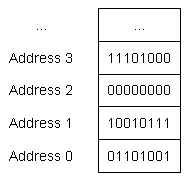

Bit, byte và memory addressing
Trong bài học 1.3 Biến, chúng ta đã biết biến là tên của vùng bộ nhớ dùng để lưu trữ thông tin. Trong mọi máy tính đều có một bộ nhớ gọi là RAM (random access memory) được dùng cho các chương trình chạy trên máy tính. Khi một biến được tạo ra, hệ thống sẽ lấy ra một vùng bộ nhớ đại diện cho biến đó.
Đơn vị nhỏ nhất của bộ nhớ là binary digit (viết tắt là bit), đơn vị chỉ có thể lưu trữ một giá trị là 0 hoặc 1. Bạn có thể tưởng tượng bit giống như là một cái công tắc đèn vậy, đèn tắt là 0, đèn bật là 1, chỉ có hai trạng thái đó mà thôi, không thể có cái đèn nửa bật nửa tắt được. Nếu bạn thấy được một đoạn thông tin trong bộ nhớ, nó sẽ trông như này: ...0100101101010...
Bộ nhớ được tổ chức thành các đơn vị tuần tự được gọi là địa chỉ bộ nhớ (memory address). Nó tương tự như địa chỉ nhà nhằm giúp người khác tìm thấy nhà họ muốn đến, địa chỉ bộ nhớ giúp chúng ta tìm đến vùng bộ nhớ mà tại đó có chứa thông tin chúng ta cần.
Trong kiến trúc máy tính hiện đại, một địa chỉ bộ nhớ không dùng để chỉ chứa một bit. Vì số lượng bit rất lớn mà địa chỉ lại có hạn, và rất hiếm khi người ta truy cập dữ liệu từng bit. Thay vào đó, mỗi địa chỉ bộ nhớ có thể chứa được một byte. Byte là một đơn vị bộ nhớ dùng để lưu trữ dữ liệu máy tính. Một byte có độ lớn bằng 8 bit.
Dưới đây là hình ảnh mô phỏng bộ nhớ gồm các địa chỉ bộ nhớ được sắp xếp tuần tự, mỗi địa chỉ chứa 8 số 0 hoặc 1 biểu thị cho 1 byte.
